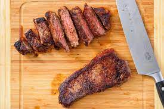

Pan Seared Steak

Pan seared steak, finished in the oven, perfect every time!
This steak is great when you aren't willing to fire up the grill for a few steaks.
Perfect for a quick easy meal, minimal setup, minimal cleaning!
Ingredients
- 2 lb sirloin steak
- 2 tbs olive oil
- sea salt
- black pepper
- 1 tsp garlic powder
Steps
- Preheat oven to 400 degrees.
- Using paper towels, pat steaks dry. (No liquid should be visible pooling on top or underneath).
- Sprinkle sea salt and black pepper to taste onto steaks. Sprinkle the garlic powder evenly across. Make sure to get both sides.
- Preheat large skillet to high heat. To check the pan is hot enough, flick a few drops of water on the pan. When it sizzles on contact, we're ready.
- Place steaks in the skillet without crowding the pan. (This may take a few rounds, that is fine). Cook each side of steaks for 1 minute 30 seconds. Transfer to baking sheet.
- Once all steaks are done in the skillet, place baking sheet of steaks into the oven. Cook for 6-8 minutes, depending on desired level of doneness.